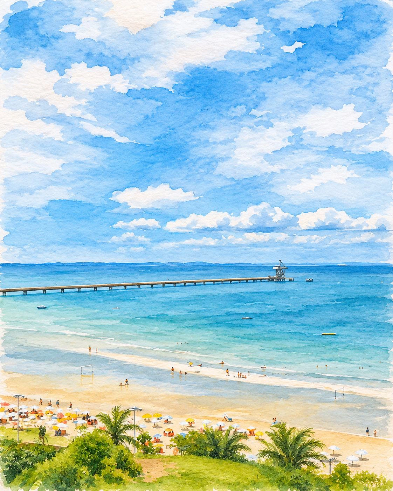
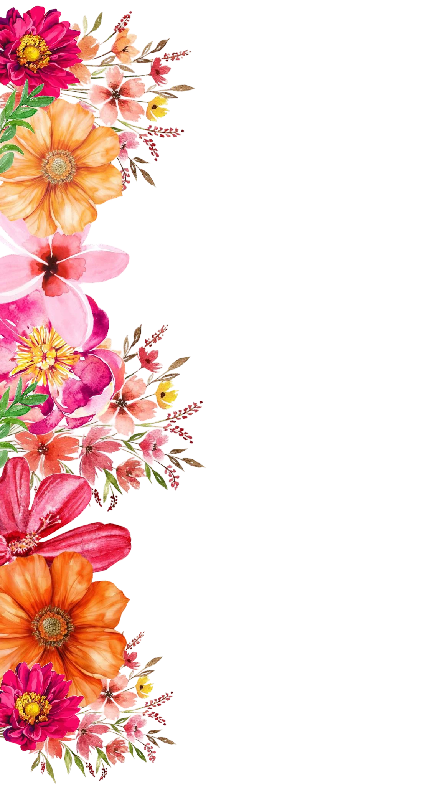
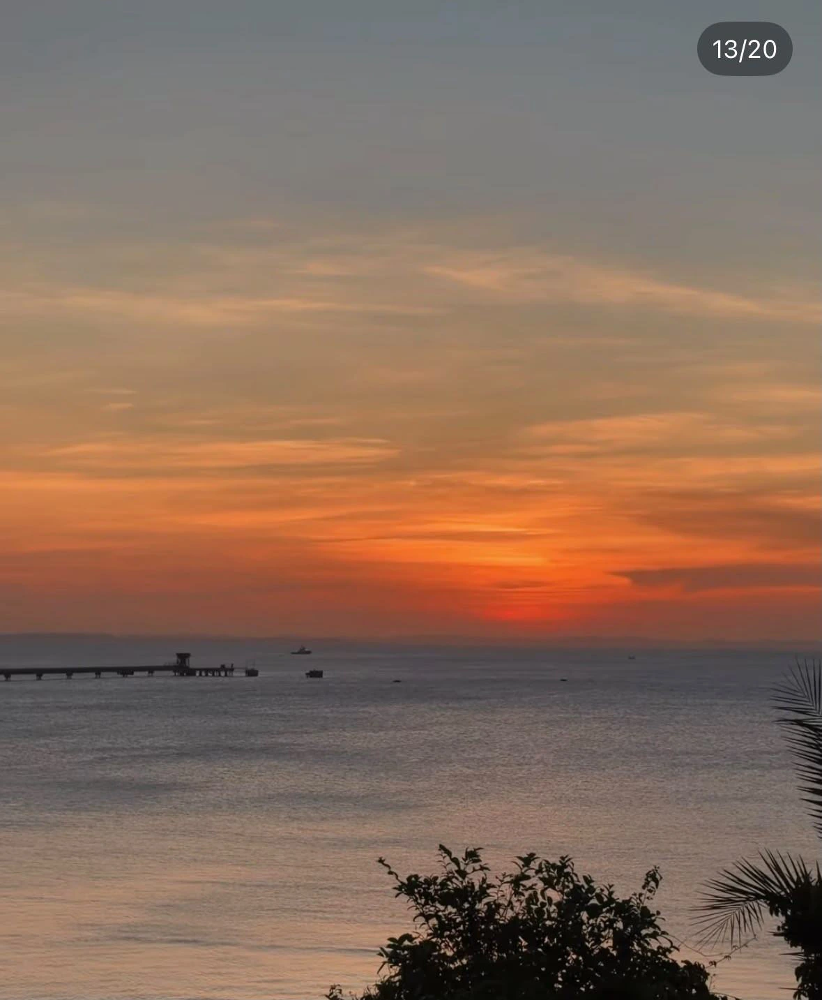
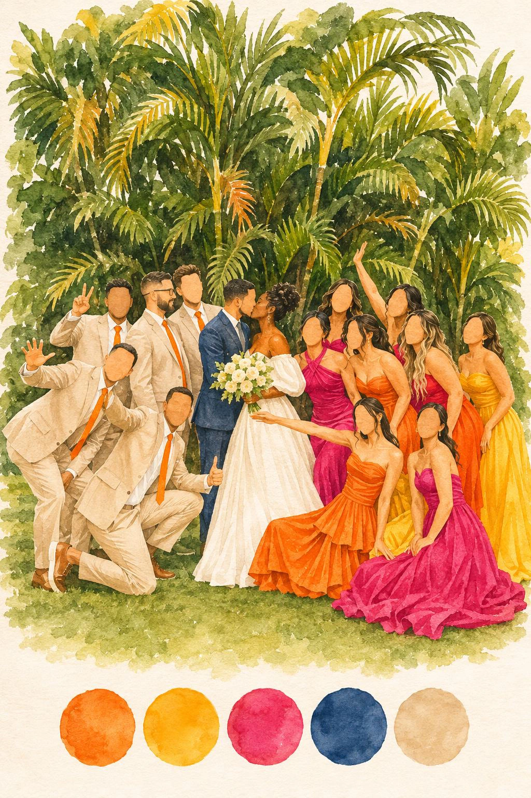
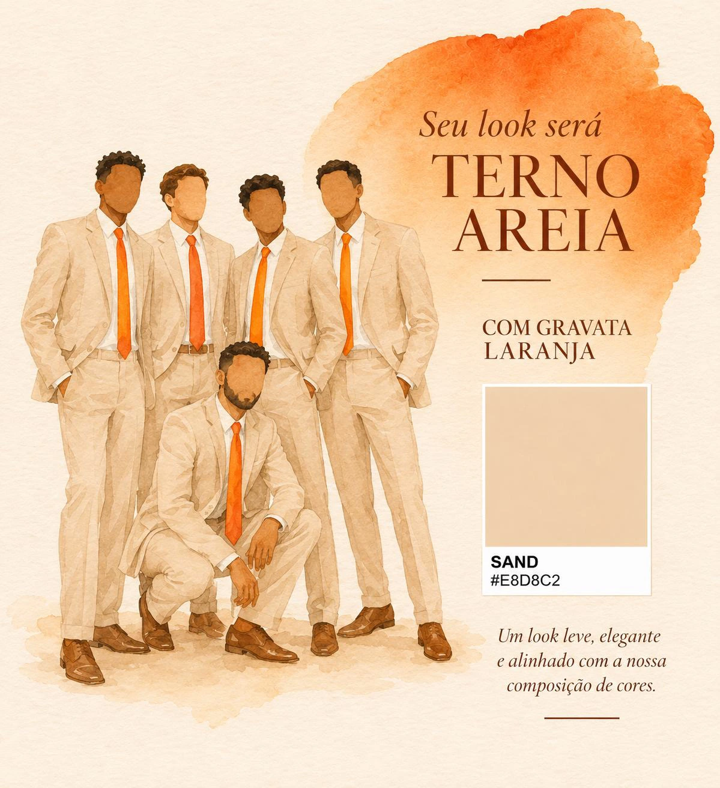

Manual dos Padrinhos

Querido padrinho
Estamos felizes por tê-lo ao nosso lado em um dos dias mais
importantes das
nossas vidas. ♡
Te escolhemos com muito carinho e temos a confiança de que nos ajudará no caminho do amor.
Sabemos que não chegamos aqui sozinhos e que você contribuiu de
forma única durante os anos
do nosso relacionamento.
Hoje, te colocamos em um dos lugares mais valiosos que um amigo
poderia estar: ao nosso lado
no altar.
Espero que goste de viver esse momento numa perspectiva tão
especial e que, assim como para
nós, este seja um dia memorável na história da nossa amizade.
Nosso dia
Sobre a data
Reserve a data na sua agenda
Evite marcar outros compromissos no mesmo dia, nosso evento terá duração estimada de 8 horas.
Se vier de longe, planeje sua viagem
Para ser um evento tranquilo, já indicamos que comecem a pesquisar passagens e hospedagens.
Organize uma folga
Se você trabalha por escala ou vai precisar tirar férias, lembre de organizar previamente.
Localização

Sobre o local
Casarão do Alto
É um espaço encantador, com vista panorâmica para uma das praias mais importantes da nossa história.
Endereço
R. do Corredor, 53 - São Tomé, Salvador - BA, 40800-300
Instagram | @casaraodoalto
Para ver mais detalhes do espaço e outros eventos no lugar é só acessar a página do instagram.
Compisção geral
Nosso casamento será uma celebração ao ar livre, de frente para o mar, inspirada pelo calor do verão e pela energia vibrante da Bahia. Pensem em verão, movimento, cor e naturalidade. Essa é a essência que queremos transmitir e que também inspira a composição dos looks de vocês.
O dress code também faz parte da nossa composição principal,
vocês serão parte e darão vida a imagem dos nossos
sonhos.
Queremos que vocês se sintam confortáveis, elegantes e à
vontade para celebrar conosco.

Dress code das Madrinhas
Para o nosso cortejo, escolhemos uma paleta inspirada nas cores do verão: tons de rosa, laranja e amarelo, que traduzem a energia, a alegria e a personalidade da nossa celebração.
A proposta é que cada você escolha um terno dentro da cor que lhe foi indicada, respeitando seu estilo e encontrando uma modelagem em que se sinta bonito e confortável.
A gravata que será utilizada já veio dentro da caixa entregue pelos noivos.
